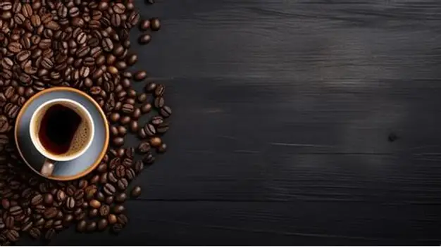
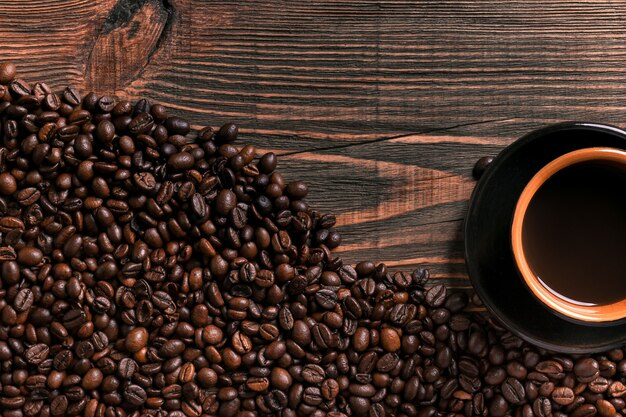
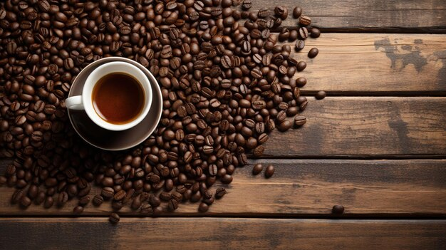
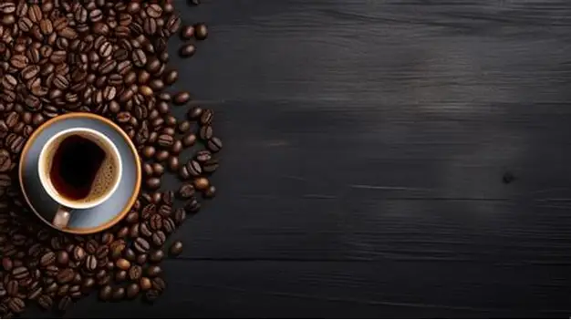
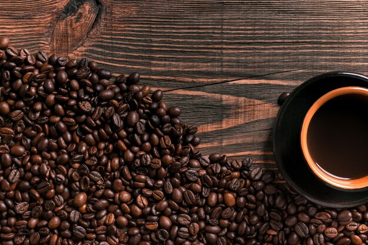
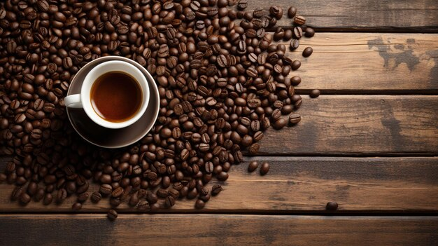

Nuestra Historia
Descubre el origen y evolución de Cafetería Miski a través del tiempo
 





Historia de la Empresa
Miski nació del amor por el café y la tradición. Fundada en 2023, nuestra cafetería toma su nombre de la palabra quechua "miski", que significa "dulce". Este nombre representa todo lo que queremos ofrecer: un espacio cálido, auténtico y lleno de sabor.
Todo comenzó como un pequeño sueño de compartir el verdadero sabor del café peruano, cultivado en nuestras ricas tierras andinas y amazónicas. Desde el inicio, nuestra visión fue clara: crear un lugar donde cada taza contara una historia, donde cada cliente se sintiera como en casa.
En Miski, no solo servimos café: creamos experiencias. Desde el grano hasta tu taza, cuidamos cada detalle con pasión. Trabajamos con caficultores locales, apoyamos la producción sostenible y promovemos la cultura del café.
Hoy, seguimos creciendo con la misma esencia que nos inspiró desde el principio: el deseo de compartir momentos dulces, auténticos y llenos de sabor.
Nuestros Valores
Los principios que guían cada decisión en Miski
Pasión por la Calidad
Cada grano es seleccionado con cuidado para garantizar la mejor experiencia en cada taza.
Autenticidad
Mantenemos nuestras raíces peruanas en cada producto que servimos con orgullo.
Compromiso
Con nuestros clientes, productores y el medio ambiente en cada acción que tomamos.
Más que una Cafetería
Miski no es solo una cafetería, es un puente entre la tradición y el futuro. Nuestro impacto se refleja en múltiples dimensiones:
Empoderamiento de Productores
Trabajamos directamente con caficultores de Cajamarca, Cusco y San Martín, asegurando precios justos.
Conciencia Ambiental
Usamos empaques biodegradables, reducimos plásticos y fomentamos el reciclaje.
Educación Cafetera
Realizamos charlas, catas y talleres para compartir el arte del buen café.
Espacio de Comunidad
Un lugar seguro para que jóvenes, estudiantes y artistas puedan reunirse y crecer.
Nuestro Impacto en Imágenes
Conoce cómo transformamos vidas y comunidades
¿Quieres Ser Parte de Nuestra Historia?
Únete a la familia Miski y vive la experiencia